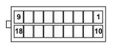

M065 Info-telematic control unit (NIT) (DASHBOARD)
- Path
- Electrical equipment > 3 CONNECTORS > M INTERMITTENT AND TIMED ELECTRONIC DEVICES > M065 Info-telematic control unit (NIT) > M065 Info-telematic control unit (NIT) (DASHBOARD)
- Kind
- connector pinout (pin -> wire colour -> other end)
- Applies to
- all engines; all production periods
- Interactive page
- https://sloeber94.github.io/elrnDB-fPnd/en/#/169003454
Applies to: all engines; all production periods

Wiring | Colour |
|---|---|
- |
Pin | Cable | Destination | |||
|---|---|---|---|---|---|
Sec.. | Colour | Node | Connect. | Pin | |
9 | 0,35 | MB (brown with white stripe) | 11 | ||
11 | 0,35 | SV (pink with green stripe) | 5 | ||
12 | 0,35 | NZ (black with violet stripe) | 8 | ||
13 | 0,35 | V (green) | 5 | ||
18 | 0,35 | HB (grey with white stripe) | 10 | ||